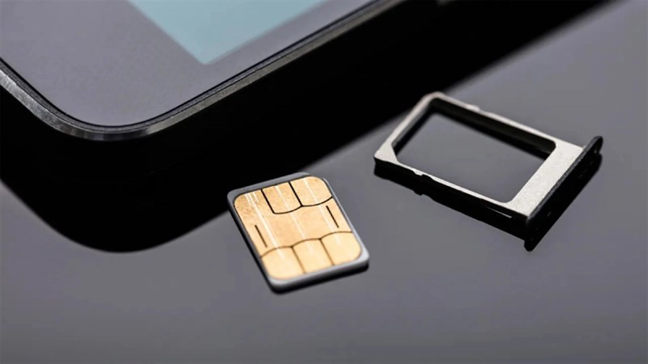

    <!-------------------------------------------blog--------------------------------------------------->
<section class="blog-details">
    <div class="container">
        <div class="blog-details-area">
            <div class="blog-details-img">
                
            </div>  
            <div class="blog_entry_content">
                <p>Not long ago, Apple released the latest versions of iOS 17 and iPadOS 17 operating systems. Besides, it also 
                    released the first Public Beta for all compatible iPhone models. In the latest beta version, Apple has added 
                    new features to iPhone models that support dual SIM, helping users have a better user experience.</p>
                <p>As TechCrunch reports, in iOS 17, dual-SIM iPhone users will be able to categorize messages by SIM. 
                    This means that messages from SIM 1 and SIM 2 will be stored and managed separately in the Messages app, making it 
                    easier for users to manage and search for messages.</p>
                <p class="blockquote">In addition, iOS 17 also provides separate ringtones for each SIM, making it easy for users to identify 
                    which SIM the call is coming from. This is very useful for users who use dual SIM for work and personal purposes. 
                    Currently, when the iPhone rings, users can't tell which SIM the call is coming from, but with a new 
                    feature in iOS 17, it's easier than ever.</p>
                <p>Finally, iOS 17 will provide a feature that allows users of dual-SIM iPhone models to select a SIM before calling an 
                    unknown number. Currently, this feature is not available because users must call via a pre-assigned SIM to make calls.</p>
                <p>These are all features that will be made available in iOS 17 for dual-SIM iPhone models. These features are not limited 
                    to the latest models, which all dual-SIM enabled iPhones will be able to use.
                    In addition, iOS 17 also offers the ability to store screenshots of entire web pages in the Photos app. 
                    Currently, you can screenshot entire web pages on iPhone, but these images are saved as PDF files instead of images. 
                    From now on, the "Save to Photos" feature will make it easier to share screenshots of entire web pages.</p>
    
            </div>
        </div>
    </div>
</section>
    <!----------------------------------------end-blog------------------------------------------>

    